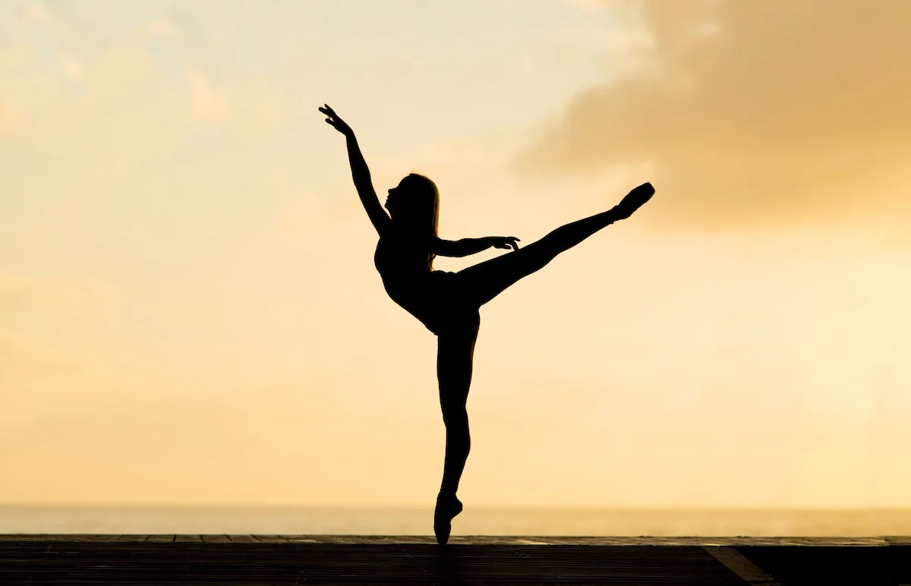

Introduction to Physical Health
What is physical health?
Physical health refers to how well your body can function when it comes to physical activity. It is very important to maintain your physical health as it enables you to complete day to day tasks without any problems. Numerous health organisations, such as the CDC, have all proven that "being physically active can significantly improve your brain health, help manage bodyweight, reduce the risk of diseases, strengthen bones and muscles, and improve your ability to do everyday activities".
How can you improve your physical health?
There are many factors that correlate to better physical health such as having a balanced diet or by even improving your. But in this section, we will cover how consistently doing exercise can improve your phyiscal health.
Below are the four main categories of exercises that all help to building better physical health:
- Endurance
- Strength
- Balance
- Flexibility
1.) Endurance
/enduranceimg.webp)
What is it?
Commonly referred to as 'aerobic exercises', endurance exercises includes any activities that increase your breathing and heart rate. It also refers to your body's physical capability of to sustain an exercise for an extended period of time.
Because of this, exercises such as walking, cycling and swimming all help to improve the health of your heart, lungs and circulatory system. The National Institute on Aging states that it can also "delay or prevent many diseases that are common in older adults such as diabetes, colon and breast cancers, heart disease, and others."
How to get started?
The good news when it comes to exercise is that it is never too late to start and can be done at different levels of difficulties! We will give you a beginner's guide of how you can get into endurance exercise. In this case, we will be covering running/jogging.
- Before you actually start running, you would want to begin with walking first. Ideally, you would want to start with at least 30 minutes of brisk walking for 3-5 days a week.
- After around a month of doing brisk walking (or whenever you feel that you're ready), you can then start implementing running into your walking sessions. A good start is to begin with 1 minute of running with a two minute walk break to catch your breath.
- As you are doing this, you would want to slowly increase the time that you are running for. It is also important to note that you should first focus on your running time, rather than the distance or speed that you are running at.
- Once you're already used to running for an extended period of time, you can then begin to either build up the distance you run or increase your running pace. This all depends with your individual goals.
2.) Strength
What is it?
Unlike endurance training, strength training is any form of exercise that involves using weights or resistance to build strength in your muscles. It is sometimes referred to as resistance training.
Like endurance training, strength training has been proven to reduce risk of heart disease, manage bodyweight, and helps with preventing mental health problems. As your muscles strengthen, it helps protect your bones and joints better making you less prone to injury.
The 2 most well-known types of strength training are:
- Weight Training
- Calisthenics / Bodyweight Training
Weight Training
The most popular form of strength training is weight training, which involves using weights such as barbells and dumbbells for resistance. Weight training is divided into 3 categories: powerlifting, bodybuilding and olympic lifting
1.) Powerlifting
Powerlifting is a sport consisting of three lifts: the squat, bench press, and deadlift. The goal of the sport is to lift as much weight as possible across the three lifts while following all the rules. The goal of powerlifters is to have as much brute strength as possible when it comes to lifting. While powerlifting will inevitably give you bigger muscles, it is not the primary focus. This is why many powerlifters may not look classically 'athletic'
2.) Bodybuilding
Bodybuilding is the sport of developing one's muscles through hypertrophic exercises. Unlike powerlifting, bodybuilding has a distinct focus on aestethics which can be described as 'how good your body looks'. The most famous bodybuilder is Arnold Schwarzenegger, who is regarded as one the best bodybuilders of all time. In summary. the goal of a bodybuilder is to look as aestethic as possible while still increasing and maintaining their strength.
3.) Olympic Lifting.
Often confused with powerlifting, olympic weightlifting training will include a reginmen of weightlifting exercises as well as cardiovscular endurance, isometrics and other strength training techniques that build explosive strength and ensure proper body alignment. As the name, this kind of weightlifting sport is done in the olympics and is very competetive compared to bodybuilding and powerlifting.
Pros
- Huge variety of exercises for beginners and pros alike
- Easier to progress as you can increase weight in small increments
- Easy to master and understand
Cons
- Higher risk of injury if exercises are peformed incorrectly
- Huge variation of exercises may intimidate or confuse beginners
- Cost of money for either gym membership and home equipment can be expensive
Calisthenics
Calisthenics is another well-known form of strength training. Rather than using equipment, calisthenics uses the weight of your body along with gravity to help strengthen your muscles, increase your endurance, and improve your mobility.
The following are a few examples of exercises that are wihtin the calisthenic category:
- Push-ups
- Pull-ups
- Sit-ups
- Squats
- Lunges
Because these exercises easily fit into almost any training style or exercise regimen, they are ideal for beginners as well as advanced exercise enthusiasts. Calisthenics is an excellent way to work out that is easily accesible to people of all ages and fitness levels.
Pros
- Can be done anywhere as it doesn't need any equipment
- Cost of money is little to none, depending on if you buy equipment or not
- Easier on your joints, tendons and ligaments
Cons
- Very little variation of calisthenic exercises
- Much harder to master most exercises such as push-ups or pull-ups
- People who have never done any strength training before may find this form of weight training quite difficult
3.) Balance
What is it?
Balance training involves doing exercises that strengthen the muscles that help keep you upright, including your legs and core. These kinds of exercises can improve stability and help prevent falls.
Some examples of balance exercises include:
- Standing with your weight on one leg and raising the other leg to the side or behind you
- Putting your heel right in front of your toe, like walking a tightrope
- Standing up and sitting down from a chair without using your hands
- Walking while alternating knee lifts with each step
- Doing tai chi or yoga
- Using equipment, like a Bosu, which has an inflatable dome on top of a circular platform, which challenges your balance
Balance is often neglected or forgotten about by many people, but it has many benefits to how your body functions. For example, If you have back pain, balance training is one of the best ways to strengthen your core and prevent back pain. If you’re recovering from a back injury, get your doctor’s OK and then start balancing. It’ll help prevent more problems in the future.
4.) Flexibility

Back to top
What is it?
Flexibility is the ability of a joint or series of joints to move through an unrestricted, pain free range of motion. Although flexibility varies widely from person to person, minimum ranges are necessary for maintaining joint and total body health.
Many variables affect the loss of normal joint flexibility including injury, inactivity or a lack of stretching. However, A lack of stretching, especially when combined with activity can lead to a fatigue induced soft tissue shortening over time.
Inadequate flexibility will have a negative effect on the body in 2 significant ways:
- Muscles that are inflexible tire more quickly, causing opposing muscle groups to work harder. Muscle fatigue can lead to muscular injuries and the inability of the muscles to protect joints from more severe injuries.
- Decreased flexibility may also lead to abnormal stress on structures and tissues distant from the initial site of inflexibility. One example of this is that tendonitis in the knee can be related to calf tightness.
But by regularly stretching everyday, you can:
- Increase your neuromuscular coordination
- Return your muscles to its natural resting state
- Decrease the your risk of injury during any sort of physical acivity
- Increase your blood supply of nutrients to your joints